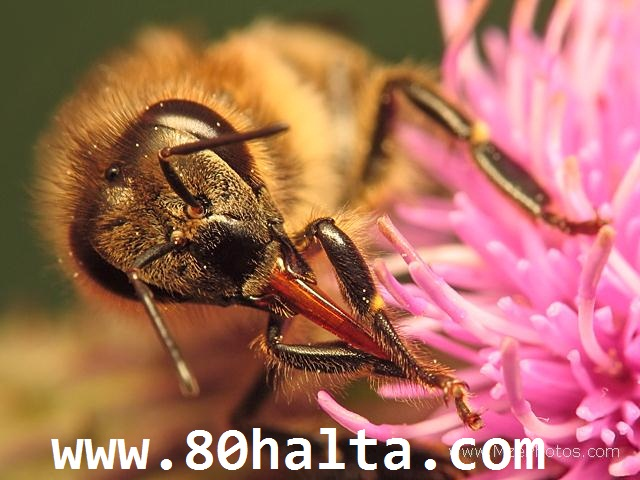

ئالدىنقى يازما
ئالدىنقى يازما كېيىنكى يازما
كېيىنكى يازما
ھەسەل ۋە ئۇنىڭ تېرىنى گۈزەللەشتۈرۈشتىكى ئالاھىدە خۇسۇسىيەتلىرى
ئاپتور:Birzat ۋاقتى:2011-02-23



ھەسەل ھەرىسى خىلمۇ-خىل گۈل-چېچەكلەرگە قونۇپ ئۇنىڭدىن يىققان شىرنىسىنى ئۇۋۇسىغا توشۇپ ئىنسانلارغا شىپالىق بولغان ھەسەل ئىشلەپ چىقىرىدۇ. ئاللاھ قۇرئان كەرىمدە ئىنسانلارغا ئاتا قىلغان كاتتا نىئمەتلەر قاتارىدا سۈت ۋە ھەسەلنى ئالاھىدە تىلغا ئىلىپ ئىنسانلارنى تەپەككۇرغا ۋە ھېكمەتكە ئۈندەيدىغان ئاجايىپ بىر ھېكمەتنىڭ بارلىقىنى سەمىمىزگە سالىدۇ. جەننەتنىڭ سۈپەتلىرى بايان قىلىنغان ئايەتلەردىمۇ جەننەتلەردە ئاستىدىن سۈت ، ھەسەل ۋە ھەر خىل ئىسىل شارابلار ئاقىدىغان ئايرىم ئۆستەڭلەرنىڭ بولىدىغانلىقى بايان قىلىنىدۇ. *
ئۇنىڭدىن باشقا قەدىمكى كىشىلەرنىڭ ھەسەلنىڭ ئوزۇقلۇق ھەم شىپاسىغا بولغان قارىشى يۈكسەك بولۇپ قەدىمكى گېرتسىيەلىكلەرھەسەلنى<<تەڭرىنىڭ بەندىلىرىگە ئاتا قىلغان كاتتا سوۋغىسى>> دەپ قارىغان بولسا قەدىمكى ھىندىستانلىقلار<<ھەسەل ئىچىش ئۆمۈرنى ئۇزارتىدۇ>> دەپ قارىغان. دېمەككى ھەسەل دۇنيادىكى بارچە ئىنسانلارغا تونۇشلۇق بولغان، ھەر قانداق يۇرت- ئىقلىملاردا، ھەر خىل ياشتىكى قىرى-ياش، بالىلار، ھەر-ئاياللارنىڭ ئورتاق ئىستىمال قىلىشىغا ماس كىلىدىغان ئوزۇقلۇق بىلەن ساقلىقنى ساقلايدىغان ئەڭ ئېسىل يىمەكلىكتۇر. ھەسەلنىڭ تېببى داۋالاش ۋە ساقلىقنى ساقلاشتىكى ئالاھىدە خۇسۇسىيەتلىرى ھەققىدە <<80خالتا بلوگى>> مىزدا ئىلگىرى توختالغان ئىدۇق. بۇ قېتىم ھەسەلنىڭ خاس چىراي گۈزەللەشتۈرۈش ئۈنۈمى ۋە ئۇنىڭ ئىلمى ئاساسى ھەققىدە قىز-چوكانلارنى مول ئۇچۇرلار بىلەن تەمىن ئىتىشكە تىرىشىمىز. چىرايلىق بولۇپ نېمە كەپتۇ دەيدىغانلار بۇ تېمىنى ئوقۇماڭ! چىرايلىق بولغۇسى بارلارغا بۇ تېما ھەققىدە كىچىككىنە ئۇچۇر بىرەي:
چىرايلىق بولغۇسى بارلارغا بۇ تېما ھەققىدە كىچىككىنە ئۇچۇر بىرەي:
ھەسەلنىڭ چىراي گۈزەللەشتۈرۈش رولى ۋە ئۇنىڭ ئىلمى ئاساسى:
1.تېرىنى نەمخۇش قىلىدۇ. ھەسەل تەركىبىدە گىلىكۇزا، مېۋە شىكىرى، ئاقسىل، كۆپ خىل ۋېتامىن، 20نەچچە خىل ئامىنو كىسلاتا، كۆپ خىل مىكرو ئىلمېنت ۋە ۋە ئېنزىم قاتارلىق تېرە ئاسرىغۇچى تەركىبلەر بار بولۇپ ، ئۇلار ئۈستۈنكى ۋە ھەقىقى تېرىگە تەسىر كۆرسىتىپ ، ھۈجەيرىلەرنى ئوزۇقلۇق بىلەن تەمىن ئېتىپ ئۇلارنىڭ بۆلۈنىشى ۋە ئۆسۈشىنى ئىلگىرى سۈرىدۇ. شۇڭا ھەسەلنىڭ ئوتتۇرا ياشلىقلارنىڭ تېرىسىنى ياخشىلاش، پىگمىنتلارنىڭ چۆكمىگە چۈشۈشىنى ئازايتىش، تېرىنىڭ قۇرغاقلىشىشنىڭ ئالدىنى ئىلىش، تېرىنى نەمخۇش قىلىش جەھەتلەردە ناھايىتى ئوبدان رولى بار. ئەگەر ھەسەل ئىستىمال قىلىشنى كۈندۈلۈك ئوزۇقلۇق ئىستىمالىنىڭ بىر قىسمىغا ئايلاندۇرالىغانلاردا بۇنىڭ رولى ئىنتايىن كۆرىنەرلىك بولىدۇ.
2.قورۇقنى يوقۇتۇپ، تېرىنى ئاقارتىدۇ. ھەسەلنىڭ تەركىبىدىكى ئاقسىل قورۇقنى يوقۇتۇش رولىغا ئىگە بولۇپ ، تېرە ئاستىدىكى مۇسكۇللارنىڭ ئۆسۈشىنى ئىلگىرى سۈرۈپ، تېرىنى تولغان ھەم ئىلاستىك ھالەتكە كەلتۈرىدۇ. بولۇپمۇ ھەسەل ئاقسىلى تەركىبىدىكى كوللاگېن تېرى ھۈجەيرىلىرىنىڭ ئۆسۈشىدىكى ئاساسلىق خام ئەشيا بولۇپلا قالماستىن، بەلكى يەنە تېرىنىڭ سۇ ساقلاش ئىقتىدارىنى كۈچەيتىپ، تېرىنىڭ ئىچى-سېرتىدىكى سۇ تەڭپۇڭلىقىنى ساقلاپ، تېرىنى نەمخۇش قىلىش رولىنى ئويناپ، تېرىنى تولغان ھالەتكە كەلتۈرۈپ، ئادەمنىڭ چىرايىنى تېخىمۇ ياش، نۇرلۇق، چىرايلىق كۆرىنىدىغان قىلىدۇ. ھەسەلنىڭ تەركىبىدىكى ئامىنو كىسلاتالارمۇ قېرىغان ۋە قاتتىقلاشقان تېرىنى يۇمشىتىپ ، مۈڭگۈز ماددا قەۋتىدىكى نەملىكنىڭ زىيانغا ئۇچرىشىنى توسۇپ، تېرىنىڭ ساغلاملىقىنى ساقلايدۇ.
ھەسەل تەركىبىدىكى كۆپ خىل ۋېتامىنلارغا كەلسەك، ۋېتامىن س قارا پېگمىنتىنىڭ <<رەقىبى>>. ۋېتامىن ئې نىڭ تېرىنىڭ قېرىشنى كىچىكتۈرۈش رولى بولۇپلا قالماستىن، بەلكى يەنە قىل قان تومۇرلارنى كېڭەيتىش، قان ئايلىنىشنى ياخشىلاش، قىزىل قان ھۈجەيرىلىرىنىڭ ھايات كەچۈرۈش ۋاقتىنى ئۇزارتىش ۋە پىگمېنتلارنىڭ چىقىرۋېتىلىشىگە پايدىلىق رولى بار، شۇنىڭ بىلەن بىللە، ئۇ يەنە تېرە ئاستىدىكى ئوشۇقچە ياغنىڭ ئوكسىدلىنىشقا پايدىلىق بولۇپ، توقۇلما ھۈجەيرىلىرىنىڭ ئاكتىپلىقىنى كۈچەيتىپ. تېرىنى سىلىقلايدۇ ھەمدە قاشتىشىدەك سۈزۈك قىلىدۇ.
ھەسەل تەركىبىدىكى ۋېتامىن ئا قورۇق چۈشۈشكە قارشى تۇرۇش رولىغا ئىگە بولۇپ، تېرىنىڭ ماددا ئالماشتۇرىشىنى ئىلگىرى سۈرۈپ، تېرىنى يۇمشاق، سېلىق، ئېلاستىكىلىققا ئىگە قىلىدۇ، بولۇپمۇ كۆزنى رۇشەن، چاقناپ تۇرىدىغان قىلىدۇ؛ ۋېتامىن ب بولسا تېرە ياللۇقىغا قارشى تۇرىدىغان ئالاھىدە ئۈنۈملۈك ماددا بولۇپ يۈزدىكى پېگمىنت دېغى ۋە دانخورەكنىڭ ئالدىنى ئالىدۇ ۋە ئۇلارنى يوقىتىشقا ياردەم بىرىدۇ. ۋېتامىن ب 3 تېرە توقۇلمىلىرىنىڭ كىرەكسىز ماددىلارنى چىقىرۋېتىش، فونكىسيېسىنى ياخشىلاپ، قان ئايلىنىشىنى ئىلگىرى سۈرىدۇ؛ ۋېتامىن ب 6 تېرە ياغ بېزىنىڭ ھەركىتىنى تورمۇزلاپ ، تېرە مېيىنىڭ ئاجرىلىپ چىقىشىنى ئازايتىپ ، دانخورەك چىقىشنىڭ ئالدىنى ئىلىشقا پايدىلىق بولىدۇ.؛ ۋېتامىن ب 12 قان ھاسىل قىلغۇچى ماددا بولۇپ، قان رەڭ ماددىسىنى كۆپەيتىپ، تېرىنىڭ رەڭگىنى ئانار دانچىسىدەك چىھرىلىك ۋە جۇشقۇنلۇققا ئىگە قىلىدۇ، تېرىنى سۈزۈك ۋە يۇمشاق قىلىدۇ.
3.چوڭ تەرەتنى راۋانلاشتۇرۇپ ئۇيقۇ سۈپىتىنى ياخشىلايدۇ.
قەۋزىيەت چىراي گۈزەللەشتۈرۈشنىڭ دۈشمىنى، چوڭ تەرەت راۋان بولمىسا، چوڭ تەرەتتىكى زەھەر(توكسىن) قان تەرپىدىن سۈمۈرلۈپ، تېرىنىڭ فىزئولوگىيلىك فونكىسيېسىگە ئېغىر تەسىر يەتكۈزىدۇ.، نەتىجىدە تېرە پارقىراقلىقى ۋە ئىلاستىكىلىقىنى يوقىتىدۇ، شۇنىڭ بىلەن تېرىنىڭ قېرىشى تېزلىشىدۇ. بۇ تېرىگە قورۇق چۈشۈش، داغ پەيدا بولۇش، مۇدۇر-ئەسۋە چىقىشنىڭ سەۋەبىدۇر. ھەسەل بولسا چوڭ تەرەتنى راۋانلاشتۇرىدىغان ئەڭ ئېسىل، بىخەتەر دورا ھېسابلىنىدۇ. ئۇيقۇ سۈپىتى ياخشى بولماسلىقمۇ چىراي گۈزەللىكىنىڭ چوڭ دۈشمىنى. ئۇيقۇ يېتەرلىك بولمىسا قاننىڭ ئايلىنىشى ئاستىلاپ، كۆز ئەتراپى قارىداش، ئىچكى ئاجراتما قالايمىقانلىقى كىلىپ چىقىپ تېرە پارقىراقلىنى يوقىتىدۇ - دە، ئادەمنىڭ چىرايى تاتىراڭغۇ، خۇنۈك، قان رەڭگىدىن خالى سارغىيىپ كۆرىنىدۇ. ھەسەلنىڭ تەركىبىدىكى گىلكۇزا، ۋېتامىن ۋە ماگنىي، فوسفۇر، كالتىسىي قاتارلىق ماددىلار نېرۋىلارنى ئوزۇقلاندۇرۇپ، نېرۋا سىستېمىسىنى تەڭشەيدۇ، شۇ ئارقىلىق ئۇيقۇنى ئىلگىرى سۈرۈش رولىنى ئوينايدۇ. شۇڭا دائىم ھەسەل ئىستىمال قىلىپ بەرسە ئۇيقۇ سۈپىتىنى ياخشىلاپ چىراي گۈزەللەشتۈرۈشتىن ئىبارەت قوش ئۈنۈمگە ئېرىشكى بولىدۇ.
چىراي گۈزەللەشتۈرۈش ئۇسۇلى:
ھەسەل تارىخى ناھايىتى ئۇزۇن چىراي گۈزەللەشتۈرۈش بۇيۇمى بولۇپ، ئۇنى مەيلى سىرتتىن سۈركەپ بەرسىمۇ ياكى ئىچىدىن ئىچىپ بەرسىمۇ، بەدەنگە ۋە تېرىگە ئىنتايىن چوڭ پايدىسى بار.
* ئەگەر 10يىلدىن كىيىن كۆپ پۇل خەجلەپ تېرە تارتىش ئوپراتسىيەسى قىلدۇرماي ھەم گۈزەللەشتۈرۈش ئوكۇلى ئۇردۇرماي دېسىڭىز ئۇنداقتا ھازىردىن باشلاپ ھەر كۈنى ئەتتىگەندە بىر ئىستاكان سوۋۇتۇلغان قايناقسۇغا لىق بىر قوشۇق ھەسەل سىلىپ ئىرىتىپ ئاچ قورساققا ئىچىپ بىرىڭ، مۇشۇنداق قىلغاندا جىگەرنىڭ زەھەر قايتۇرۇش ئىقتىدارنى كۈچەيتىپ، قەۋزىيەتنى راۋانلاشتۇرۇپ بەدەننى تازىلاپ داغلارنى يوقۇتۇپ يۈز تېرىسىنى ئاق ۋە يۇمۇران قىلغىلى بولىدۇ.
ھەسەل بىلەن يۈز يۇيۇپ چىراي گۈزەللەشتۈرۈش ئۇسۇلى:
يېڭى، ساپ، سۇس رەڭلىك، سۇيۇقراق ھەم سۈزۈك بولغان، پۇرىقى تەبئىي بولغان سۈپەتلىك ھەسەل سېتىۋېلىپ ھەر قېتىم يۈز يۇيغاندا، ئالدى بىلەن يۈزنى ئىلمان سۇدا يۇيۇش، ئاندىن ھەسەلنى مۇۋاپىق مىقداردا ئالقانغا تۆكۈپ، ئىككى قولنى جۈپلەپ ئىشقىلاش (ھەسەل قويۇق بولسا ئازىراق سۇ قوشۇپ سۈيەلتسە بولىدۇ)، ئاندىن ئىككى قولنى يۈزگە يېقىپ تۇرۇپ يۇقۇرىغا ۋە سىرتقا قارىتىپ چەمبەر شەكلىدە ئۇۋۇلاش لازىم. تۆۋەندىكى بىر قانچە ئورۇننى ئىنچىكىلىك بىلەن نۇقتىلىق ئۇۋۇلاش لازىم. كۆز قۇيرۇقىدىكى بېلىق قۇيرۇقىسىمان قورۇق بار ئورۇننى ئىككى قولنى بارماق يۈزى بىلەن ھالقا شەكلىدە ئايلاندۇرۇپ ئۇۋلاش، پىشانىدىكى قورۇق بار ئورۇننى تىك يۆلىنىشتە ئۇۋۇلاش؛ بۇرۇن لىپىلدىقىنىڭ ئىككى يېنىنى ھالقا شەكلىدە ئۇۋۇلاش؛ قاڭشار قېرىنى يۇقۇرى-تۆۋەن ئۇۋۇلاش؛ بويۇننى تۆۋەندىن يۇقۇرىغا قارىتىپ ئۇۋۇلاش؛ قۇلاقنىڭ ئىككى يېنىنى يۇقۇرى-تۆۋەن ئۇۋۇلاش؛ ئېغىز ئەتراپىنى <<八>> شەكلىدە ئۇۋۇلاش كېرەك. ئۇۋۇلاپ بولغاندىن كېيىن، يۈز - قولىنى ئىلىمان سۇ بىلەن پاكىز يۇيۇۋېتىپ، تېرە ئاسراش مايلىرىنى سۈركىۋالسا بولىدۇ.
بىرزات دۇكىنى سىزگە ھەسەل ئىستىمال قىلغاندا شۇنى سەمىڭىزگە سالىدۇ:
ساپ ھەسەل ئىستىمال قىلغاندا ھەسەلنى يۇقۇرى تېمپىراتۇرىدىكى قايناق سۇدا ئېرىتىپ ئىچسىڭىز ھەسەل تەركىبىدىكى نازۇك ئىلمېنت ۋە ئوزۇقلۇقلار زىيانغا ئۇچرايدۇ. ھەسەل چاينىڭ رەڭگى ، پۇرىقى ئۆزگىرىپ كېتىدۇ. شۇڭا ھەسەلنى سوۋۇتۇلغان ئىلمان قايناق سۇدا ئېرىتىپ ياكى نان بىلەن مىلەپ يېسىڭىز ئەڭ ياخشى ئۈنۈمگە ئېرىشەلەيسىز.
ئىچى سۈرۈپ كەتكەن، ئۆتكۈر دەرىجىدە ئۈچەي ياللۇقى بارلار ھەسەل ئىستىمال قىلسا كېسىلى تېخىمۇ ئېغىرلاپ كېتىدۇ.
ھەسەلنى پىياز بىلەن ئىستىمال قىلسا كۆزگە زەرەر قىلىدۇ.
ھەسەلنى گۈرۈچ بىلەن ئىستىمال قىلسا ئاشقازاننى ئاغرىتىدۇ.
ھەسەلنى كۈدە بىلەن ئىستىمال قىلسا يۈرەككە زەرەر يەتكۈزىدۇ.
ھەسەلنى پۇرچاق ئۇيۇتمىسى بىلەن ئىستىمال قىلسا قۇلاقنىڭ ئاڭلاش ئىقتىدارى زىيانغا ئۇچرايدۇ.
تۆۋەندە بىرزات دۇكىنىمىزدا سېتىلىدىغان ھەسەللەر تونۇشتۇرىلىدۇ:
ھەسەل دېگەننى زاۋۇتتا ئىشلىگىلى بولمىغاندىكىن ھەر يىلى چېچەك پەسلىدە ھەسەل ھەرىلىرىنى يايلىتىپ ھەسەل يېغىدىغان ئىش ئىكەن. ھەسەل ھەرە كۆنىكىگە يېغىلىپ پىشىپ تەييار بولغۇچە يەنە 40 كۈن ۋاقىت ئۆتىدۇ. ھەسەل كۆنەكتە قانچە ئۇزۇن تۇرسا ھەسەل مىقدارى ئازلاپ كەتكەن بىلەن سۇ مىقدارى ھاۋاغا ئۆرلەپ ئوزۇقلۇق قىممىتى ئاشىدۇ ھەم ئۇزۇن ۋاقىت ساقلاپ ئىستىمال قىلغىلى بولىدۇ. كۆنەكتىن ئالدىراپ ئىلىنغان ھەسەل مىقدارى كۆپ، ئۆزى سۈيۇق، خام بولىدۇ. بۇ ھەسەلنىڭ سۇ مىقدارى كۆپ، ئوزۇقلۇق قىممىتى تۆۋەن بولىدۇ. ئاسان بۇزۇلۇپ قالىدۇ.
ساپ ھەسەللەرنىڭ خۇسۇسىيەتلىرى ئاساسلىقى بەدەندىكى زەھەرلەرنى تازىلاش، ئەزالارنىڭ ئوزۇقلۇق سۈمۈرۈش خىزمىتىنى ياخشىلاپ ھەم ئوزۇقلۇق مىنىرال ماددىلار بىلەن تەمىنلەپ ئومومىي بەدەننى قۇۋۋەتلەيدىغان، چىرايىنى نۇرلۇق قىلىپ كەيپىياتنى تىتكلەشتۈرىدىغان بولسىمۇ چېچەك تۈرلىرىنىڭ ئوخشىماسلىقىغا قاراپ مۇئەييەن پەرقلەر مەۋجۇت بولىدۇ. داۋاملىق ھەسەل ئىستىمال قىلىشقا ئادەتلەنگەن كىشىلەر بۇ نۇقتىغا دېققەت قىلىسا تېخىمۇ ياخشى ئۈنۈمگە ئىرىشەلەيدۇ.
بىرزات دۇكىنىمىزدا ھەسەل ھەرىسى ئۆزى تەبئىي گۈل-چېچەكلەردەن پىششىقلاپ ئىشلەپ چىققان، ئادەملەرنىڭ <<قولى >> تەگمىگەن ، ھەسەل ھەرىسىنىڭ كۆنىكىدە ياخشى پىشىپ چىققان ئېسىل ھەسەللەر بار. ھەر ۋاقىت ساغلاملىقىڭىزنى ئاسىراپ، چىرايىڭىزنى نۇرلۇق، روھىڭىزنى تېتىك تۇتۇشنى خالىسىڭىز ئىشەنچلىك ساپ ھەسەللىرىمىزدىن ئىچىپ قويۇڭ! يىراقتا بولسىڭىز ئەۋەتىمىز.
دورىلىق ئۆسۈملۈك چېچەكلىرىدىن ئىلىنغان ئالىي ھەسەل:
ئومومىي بەدەننىڭ تۇتۇش قۇۋۋىتى ئاجىزلىغان كىشىلەر: دىئابىت كېسەللىرى، بۆرەك، نېرۋا ئاجىزلىقى سەۋەبىدىن بولغان مەنىي تېز كېتىش، ئاياللاردا ئىچكى ئاجرالمىلار قالايمىقانلىشىشتىن بولغان ئادەت مىقدارى ئازلاپ كېتىش، قەۋزىيەت، چىرايى نۇرسىز بولۇش قاتارلىقلار؛ زېققە قاتارلىق نەپەس يوللىرى كېسەللىكلىرى بىلەن ئاغرىغان بىمارلار؛ مېڭە ئاجىزلىقتىن بولغان ئۇيقۇسىزلىق، ئۇنتىغاقلىق قاتارلىقلارغا كۆڭۈلدىكىدەك ئېسىل ئوزۇقلۇق بولالايدۇ. جۈملىدىن تۇرمۇش، خىزمەت بېسىمى كۈندىن-كۈنگە ئېغىرلىشىۋاتقان بۈگۈنكى كۈندە ھەر بىر كىشىلەرنىڭ قۇۋۋەت تولۇقلاشتىكى ئىشەنچلىك ئوزۇقلۇق بولالايدۇ. ھەر كىلوگىرامىنىڭ باھاسى: 80 يۈئەن
100% ساپ جىگدە چېچىگى ھەسىلى؛
بىر قانچە يىللىق ئەمەلىي تەجىربىمىزدىن قارىغاندا جېگدە چېچىگى ھەسىلىنىڭ ئوزۇقلۇق، قۇۋۋەت تەركىبى يۇقۇرى بولۇپ ئاساسلىقى بۆرەك، ئاشقازان، بالياتقۇ سوۋۇپ كېتىشتىن بولغان ئاجىزلىقلار، نېرۋا ئاجىزلىقى ، پۇت-قوللار ماغدۇرسىزلىنىش قاتارلىق ئالامەتلەر كۆرۈلگەنلەرنىڭ ئىستىمال قىلىپ بىرىشىگە ماس كىلىدۇ. (بالىلارغا ماس كەلمەيدۇ) ھەر كىلوگىرامىنىڭ باھاسى: 60 يۈئەن
باشقا چېچەك ھەسىلى ئارىلاشمىغان ئالىي دەرىجىلىق يانتاق چېچىگى ھەسىلى،
ئاساسلىق خۇسۇسىيىتى: ئاشقازان -ئۈچەيدىكى يەللەرنى تارقىتىش، زەھەر تازىلاش، قەۋزىيەتنى راۋان قىلىش، گېمىروي(بوۋاسىر) غا مەنپەئەت قىلىش، چىراينى سۈزۈش، ئىچكى ئاجرالمىلار توسۇلۇش سەۋەبلىك ھەيز ئاغرىتىپ كىلىش قاتارلىقلاردا ئىستىمال قىلىشقا ماس كىلىدۇ. ھەر كىلوگىرامىنىڭ باھاسى: 50 يۈئەن

 يازما مەنبەسى: بېكەت ئەسىرى
يازما مەنبەسى: بېكەت ئەسىرى خەتكۈش: ھەسەل، خانىملار، گۈزەللىك
خەتكۈش: ھەسەل، خانىملار، گۈزەللىك  مۇناسىۋەتلىك يازمىلار:
مۇناسىۋەتلىك يازمىلار:
 قايتۇرما
قايتۇرما ]
]ئەسسالامۇ ئەلەيكۇم قېرىنداشلار تەن ساقلىق ئاللا بىز بەندىلىرىگە ئاتا قىلغان ئەڭ چوڭ نېمەتلىرىدىن بىرى جۈملىدىن چىش ساغلاملىقى بىزنىڭ بۇ نېمەتتىن بەھرىمەن بولىشىمىزدىكى كاپالەتتۇر. ئەمماخەلقىمىزدە توغرا بولغان چىش ساغلاملىقى قارىشى مۇكەممەل بولمىغاچقا چىش قۇرۇتلاش،چىش مىلىكى بوشاپ كېتىش ۋە ياللۇغلىنىش ۋە ئۇنىڭدىن باشقا تۈرلۈك چىش كېسەللىكلىرى ھازىر چوڭ-كىچىك ھەممەيلەندە دېگۈدەك كۆرۈلىۋاتىدۇ.بىلىشىمىزچە كورىيە ،ياپونىيەلەردە چىش قۇرۇتلاشنىڭ ئالدىنى ۋە ئۇنى داۋالاش تېخىچە تەتقىقات باسقۇچىدا تۇرۇۋېتىپتۇ.
مەن خېلى كۆپ ئىزدىنىش ئارقىلىق مىللىي تېبابەت دورىلىرىدىن پايدىلىنىپ چىش قۇرۇتلاش،چىش مىلىكى بوشاپ كېتىش ۋە ياللۇغلىنىشنىڭ ئالدىنى ئالىدىغان چىش قۇرۇتلاشنىڭ ئالدىنى ئېلىش ۋە داۋالاش سۇيۇقلۇقىنى تەييارلاپ چىققانىدىم .ئەمما دورىنى قاچىلاش ،ئۆلچەملىك ماركا بېكىتىش جەھەتلەردىكى قىيىنچىلىقلارغا يولۇقتۇم. بۇ جەھەتتە تەجرىبىسى باردوسلارنى تېپىش ئۈچۈن سىلەرگە مەسلىھەت سېلىپ باقاي دەپ بۇ تېمىنى يوللىدىم. دورىنىڭ يەنە كۆز ياشاڭغۇراش،كۆز ئاجىزلىقى قاتارلىقلارغا قارىتا قوشۇمچە تەسىرى ۋە كىرپىكنى قۇۋۋەتلەش،يۈزتېرىسىنى ياخشىلاپ ، پارقىرىتىش روللىرىمۇ بار. ئېغىزغا ئىشلىتىلگەندەئادەتتە كۈندە بىر نەچچە قېتىم ئېغىزغا پۈركۇلسە بولىدۇ.
بۇ ئۇنۋېرسال ئالاھىدىلىككە ئىگە دورا بولغاچقا تەرەققىيات ئىستىقبالى زور. شۇڭا بۇ ساھەدەھەمكارلىشىشنى خالايدىغان قېرىنداشلارنىڭ مەن بىلەن ئالاقىلىشىشىڭلارنى قارشى ئالىمەن.تېلىفۇن نومۇرۇم15292973517 چ چ رىم 1063935730
بۇ دورىنى ياندا ئېلىپ يۈرۈشكە قولايلىق بولىشى ئۈچۈن دورا سۇيۇقلۇقىنى قاچىلاشقا ئاق رەڭلىك ،50ml ياكىml 40لىق پۈركىمە قۇتا جىددى لازىم بولۇپ قالدى . ماڭا ياردەملىشىپ ئالاقىلىشىپ بەرسەڭلار.بۇ قۇتىنىڭ رەسىمىنى يوللىيالمىدىم ماڭا ياردەم قىلساڭلار.
ئادەتلەنگەن ئېغىرراق قەۋزىيەتكە :
ھەر كۈنى ئەتىگەندە ئاچ قورساققا1-2 قوشۇق ھەسەلنى ئىلىمان قايناقسۇدا ئېرىتىپ ئىچىپ بىرىدۇ ياكى قايناقسۇغا ئازىراق تۇز سىلىپ ئىچىپ بىرلىدۇ.
سانادىن 15-30 گىرامنى قايناقسۇغا چىلاپ تەمىنى چىقىرىپ سۈزۈپ ئىچىلىدۇ.
يېڭى كۈدىنى يانچىپ سۈيىگە ئازىراق ئىلىمان سۇ قۇيۇپ ئىچىپ بەرسە سوزۇلما خاراكتېرلىك قەۋزىيەتكە مەنپەئەت قىلىدۇ.
تاتلىق ياڭيۇدىن مۇۋاپىق يەپ بەرسىمۇ سوزۇلما خاراكتېرلىك قەۋزىيەتكە مەنپەئەت قىلىدۇ.
تەرەنجىبىن ئىرىتىپ ئىچىپ بەرسىمۇ ئۇچەينى سىلىقلاپ قەۋزىيەتكە مەنپەئەت قىلىدۇ.
دورىلاردىن : قۇرسى تەنىكار، ھەببى رەۋەن، مەجۈنى سانا دېگەنلەرنىڭ قايسىسى بولسا ئىچىپ بەرسە بولىدۇ.
دوستىڭىزدىكى ئەھۋال ھەقىقەتەن ئېغىر ئىكەن. چوڭ تەرەت ئۈچەيدە ئۇزۇن تۇرۇش نەتىجىسىدە قان يۇقۇملانغان، بۇزۇلغان ئەھۋالدا ئۇيغۇر تېبابەت شىپاخانىلاردا ياتاققا ئىلىپ بىمارنىڭ مىزاج ئالاھىدىلىكىنى، قەۋزىيەت بولۇشنىڭ سەۋەبچى ئامىلىنى ئاساس قىلىپ تۇرۇپ مۇناسىپ مەتبۇخ (قان تازىلىغۇچى قايناتما دورا) ۋە باشقا مۇرەككەپ ياسالمىلىق دورىلارنى ئىشلىتىش ئارقىلىق چارە قىلىشى مومكىن.
________ بىرزات
يالپۇز، پىننە، سانا، ئارپابەدىيان، بىنەپشە، زاراڭزا چېچىگى، لاچىندانە، شاھتەررە (يەرباغرى ئوت) دېگەنلەردىن تەڭ مىقداردا ئىلىپ چايلىق تەييارلاپ ئىچىپ بىرىلىدۇ.
يەنە بىر رېتسىپ:
سانا بىلەن رەۋەننى 45 گىرامدىن ئىلىپ يۇمشاق ئېزىپ ھەر قېتىمدا بىر ئىستاكان قاينىتىلغان سۈتكە بىر قوشۇقتىن سىلىپ ئارىلاشتۇرۇپ ئىچىپ بەرسىمۇ ئۈچەينى تازىلاپ قەۋزىيەتنى راۋان قىلىدۇ.
چامغۇرنى قاينىتىپ سۈيىنى ئىچىپ بەرسىمۇ ئۈچەي خىزمىتىنى ياخشىلاپ چوڭ تەرەتنى راۋان قىلىدۇ.
تەۋسىيە: ئادەتتە قەۋزىيەت، ئادەت مىقدارى ئازلاش سەۋەبلىك يۈزىگە داغ، دانىخورەك چىقىپ كەتكەنلەرمۇ تېرە يۈزىدىن ھەر خىل ھۆسىن گۈزەللەشتۈرۈش مەلھەملىرىنى ئىشلىتىش ئورنىغا يۇقۇردىكى چارىلەرنى قىلىپ ئىچكى مەسىلىلەر ھەل بولسا تېرە يۈزىدىكى مەھىلىلەرمۇ ئۆزلىكىدىن ھەل بولىدۇ.
_______ بىرزات